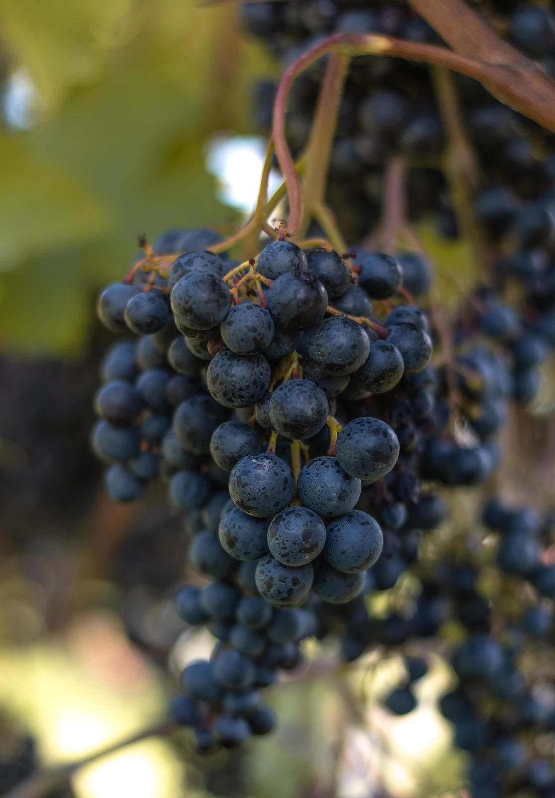
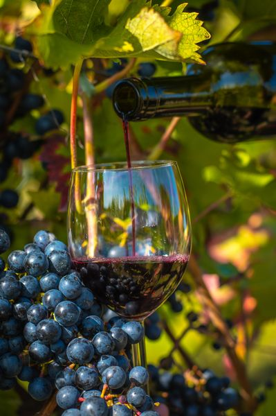

Czerwona odmiana
Dornfelder
Znana z soczystych, owocowych win o miękkich taninach i intensywnej barwie.
Dornfelder daje wina o bardzo intensywnym kolorze i miękkiej, przystępnej strukturze. To odmiana, która nie wymaga długiego dojrzewania, żeby smakować dobrze.
W aromatach pojawiają się wiśnie i jeżyny. Łagodne taniny sprawiają, że wina z Dornfeldera są dobrym wyborem także dla osób, które zaczynają przygodę z winem czerwonym.
Jak uprawiamy Dornfelder w Kielnej Górze
Winnica Kielna Góra leży w Kielnarowej, około 10 km od centrum Rzeszowa, na stoku o południowym nachyleniu. Pierwsze krzewy zasadziliśmy w 2020 roku, a gospodarujemy na jednym hektarze. Dornfelder jest jedną z siedmiu odmian, które tu uprawiamy — wszystkie dobrane pod kątem odporności i naszego klimatu.
Charakterystyka
- intensywny kolor
- aromaty wiśni i jeżyn
- łagodna struktura
Zdjęcia


Wina z tej odmiany
Sprawdź aktualną dostępność w naszym sklepie.